VKA Image Consistency Specification
The purpose of this document is to ensure consistency between images made by disparate artists. I've tried to write it to answer as many potential questions as possible, address common pitfalls, provide as much data about the world of each image as possible, and provide a style guide for how images should appear. However, there's always the possibility that I've missed something, or forgot to mention it in the spec for each specific image. If you are unsure about anything, do not hesitate to email me with questions.
Use the navigation control below to jump to a specific section. Click the "Show Tags" checkbox to display a list of things each section is relevant to. Use the "Tag Filter" control to display only content relevant to specific tags.
Setting
This section describes the AU the game is set in, and the various worlds contained within it.
The game takes place in a loose "almost everyone is alive and on the Meteor AU" setting, for every main character up to EOA5 ([S] Cascade). Everything that happened in canon in Act 6+ has not occured in this AU. Specifics may change depending on which gameplay world a given image will be used for; these changes are detailed below.
Character Data
This section details the state of each character.
Definition of Terms
Some of the terms used in the tables below require definition. This table provides those definitions.
Note that all genitalia will be human-type.
| Term | Definition |
|---|---|
| Base Color | The color that should be used in a specified situation if your image is flat color. If your image is shaded, lighting modifications should be done in relation to this color. |
| Hermaphroditic | This character posesses a human penis and a human vagina. No testicles are present. |
| Dual Hermaphroditic | This character posesses two human penises and vaginas. No testicles are present. The positions of the duplicate organs should express bilateral symmetry along the height axis. |
Data Table
| Character | Sexual Organs | Clothing Reference | Body Type Reference | Additional Notes |
|---|---|---|---|---|
| John Egbert | Male |  |
Hood should only go down to the waist, not trail behind him as in the clothing reference. | |
| Rose Lalonde | Female |  |
||
| Dave Strider | Male | |||
| Jade Harley | Hermaphroditic | Is Dog Tier (ears and tail). | ||
| Aradia Megido | Hermaphroditic | 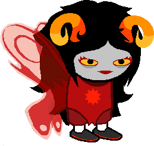 | 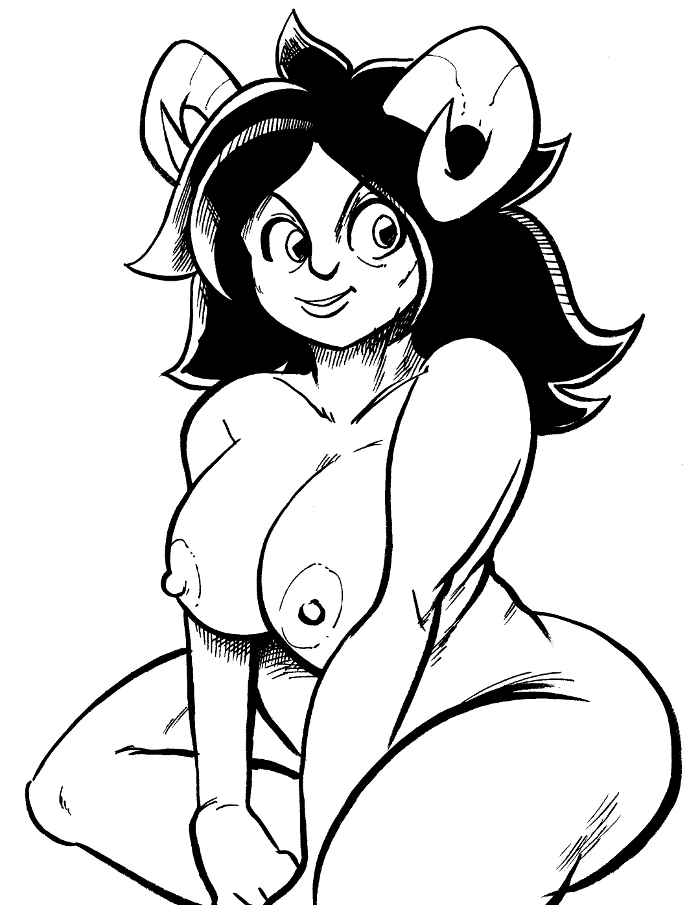 | No wings. |
| Tavros Nitram | Hermaphroditic | Robotic genitals (because he has robotic legs). | ||
| Sollux Captor | Dual Hermaphroditic | Not blind or half dead. | ||
| Karkat Vantas | Female |  |
||
| Nepeta Leijon | Hermaphroditic | 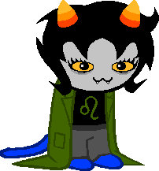 | Tail is an extension of her spine. | |
| Kanaya Maryam | Hermaphroditic | Is still a rainbow drinker and still has that hole in her stomach. | ||
| Terezi Pyrope | Hermaphroditic | Is still blind. | ||
| Vriska Serket | Hermaphroditic | God Tier, so no robot arm or destroyed eye. | ||
| Equius Zahhak | Hermaphroditic | |||
| Eridan Ampora | Hermaphroditic |  |
||
| Feferi Peixes | Male | 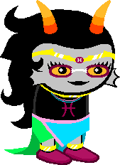 |  ⇦ Upper body | Lower body ⇨ ⇦ Upper body | Lower body ⇨  |
Color Table
| Character | True Blood Color | Base Skin Color | Base Hair Color | Base Flushed Skin Color | Base Lip Color | Lipstick Color |
|---|---|---|---|---|---|---|
| John Egbert | Human | #FFFFFF | #151515 | Human | Human | N/A |
| Rose Lalonde | Human | #FFFFFF | #F5F5F5 | Human | Human | #000000 |
| Dave Strider | Human | #FFFFFF | #F5F5F5 | Human | Human | N/A |
| Jade Harley | Human | #FFFFFF | #151515 | Human | Human | N/A |
| Aradia Megido | #A10000 | #C7C0C0 | #1C1515 | #B13434 | #1C1515 | #AD050B |
| Tavros Nitram | #A25203 | #C7C3C0 | #1C1815 | #B27236 | #1C1815 | N/A |
| Sollux Captor | #A1A100 | #C7C7C0 | #1C1C15 | #B1B134 | #1C1C15 | N/A |
| Karkat Vantas | #F20000 | #CBC0C0 | #201515 | #FA4747 | #201515 | N/A |
| Nepeta Leijon | #2E4800 | #C2C3C0 | #171815 | #3A4E16 | #171815 | N/A |
| Kanaya Maryam | #078446 | #C0C6C3 | #151B18 | #2F9060 | #151B18 | #000000 |
| Terezi Pyrope | #008282 | #C0C5C5 | #151A1A | #298D8D | #151A1A | N/A |
| Vriska Serket | #004182 | #C0C3C6 | #15181B | #295B8D | #15181B | #004080 |
| Equius Zahhak | #0021CB | #C0C1C9 | #15161E | #415BDF | #15161E | N/A |
| Eridan Ampora | #6A006A | #C4C0C4 | #191519 | #742274 | #191519 | N/A |
| Feferi | #99004D | #C6C0C3 | #1B1518 | #A9316F | #1B1518 | N/A |
Worlds
Characters and how they Interact with Worlds
Vriska Serket has the ability to teleport between various worlds, and is the only character with a knowledge of this multiverse. Every other character in a world, unless explicitly stated otherwise, is a native of that world, and will thus not find its practices strange in any way - they grew up with it.
World Table
The following is a table of the worlds being targeted for completion by v1.0. More may be added in subsequent updates. Hover over column headings for more detail about their meaning.
Please note that most of the example images given are going to be of girls because these sorts of fetishes tend to appear more in males. Most males are heterosexual, therefore artists tend to draw girls both to appeal to a wider audience within an already very niche market, and because it is most likely that they themselves are heterosexual males. However, this does not mean that any of the below details apply to only girls. Refer to the specific spec for your image(s) for details on character roles, and if you're unsure about anything, don't hesitate to ask.
| World | Kinks | Description | Examples |
|---|---|---|---|
| Normal |
|
This is the bog-standard world, where all mechanics are identical to canon. This is the world the player will start the game in. | None |
| Modularity |
|
In this world, people have the ability to detatch their own body parts and the body parts of others, re-attach them, attach them in a different place to where they started, attach someone else's body part to their own body (and vice versa), and fabricate new body parts for attaching. | |
| Doclett-Like |
|
In this world, people are killed, cooked, and eaten regularly. Everyone has a respawn ability, meaning that nobody can die permanently but their corpse is left behind. IMPORTANT: This world differs from the standard Doclett universe in that misogynism is NOT a part of it in any way. |
|
| Reduction/Objectification |
|
In this world, it is commonplace for people's living bodies to be reduced so that their new bodies make it easier to do certain jobs; for example, taking off all 4 limbs and using someone as a pillow, compressing someone down and sticking them in a pot for decoration, stringing together multiple people to make a couch, etc.. | |
| Transformation |
|
In this world, people can be transformed into, or merged into, other things, such as body parts, animals, or inanimate objects. | |
| Free Use |
|
In this world, sex is completely detached from intimacy, with it instead being a very casual thing that everyone is open to do all the time (i.e. consent is assumed and must be explicitly revoked, as opposed to the real world, where consent must also be explicitly given before any sexual acts can be ethically performed). In addition, people generally multitask sex, for example if they were eating breakfast and someone came up and started fucking them, they would continue eating breakfast. |
Troll Blood Coloration
This section describes the visibility of troll blood in various contexts.
Thin Skin
Thin pieces of troll skin should be colored according to the specific troll's blood color.
The following is an exhaustive list of places where this applies.
- The head of the penis.
- The interior of the vagina.
- The vaginal lips and surrounding region.
- The nipples, although this effect should be ~50% less pronounced on male trolls.
- The tongue.
- Areas around wounds.
- The cheeks when a troll is blushing.
Internals
Certain internal components, if visible in an image, must be colored according to the specific troll's blood color.
The following is an exhaustive list of places where this applies.
- Visible sections of flesh and muscle.
- Internal organs.
Style Guide
This section describes the style conventions that every image must follow.
Note that images that fail to meet these requirements will be edited such that the requirements are met.
Edge Ratio
Images must be around a 2:1 width:height ratio. A deviation of up to 0.3 is acceptable (1.7:1 to 2.3:1).
Image Size and Resampling
Images must have a width of at least 1024 pixels. Images must look good when downscaled using the method described in the Verify: Image Size and Resampling section to 512 pixels wide.
Transparency
User-visible transparency (i.e. portions of the image which let parts of the background through) are not to be used.
Valid Area
The engine will trim the corners off of images in order to form a rounded rectangle with corner radii 1/20th of the image's width. These areas should thus not be used for elements that are critical for a user to understand the image.
Verification
This section describes some methods to help you ensure that your image follows some of the style guidelines. It is important to note that you should NOT deliver your images after applying any of the following steps: they are here to help you in creating your image, not as things that must be done before delivery.
Verify: Image Size and Resampling
The engine will perform mipmapping on images using Lanczos resampling, and then the web browser will use nearest neighbour resampling to make up the difference. You can use the following steps to determine if your image will look good after this process is applied.
I have an image that is 1920 pixels wide and the engine wants to resize it to 512 pixels wide.
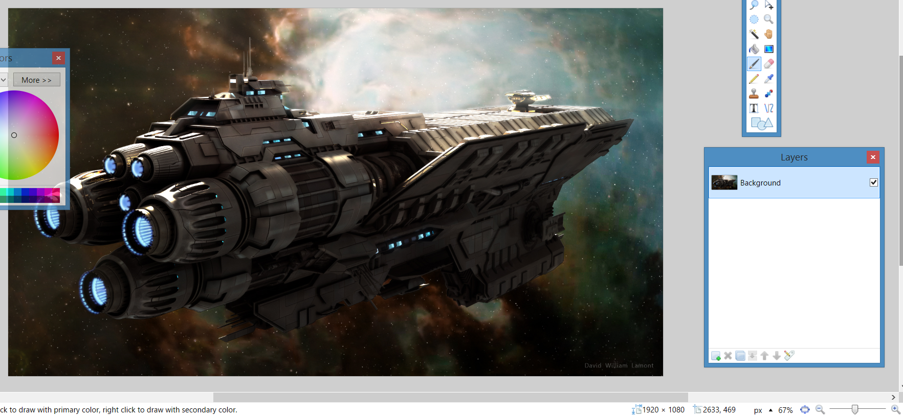
Mipmaps are generated by taking the original image and repeatedly dividing the dimensions by 2. The mipmap the engine uses is the first mipmap that is greater than or equal to the target width.
Applying this process, dividing 1920 by 2 gives 960, which is larger than 512. Dividing 960 by 2 gives 480, which is smaller than 512. Therefore the mipmap that is 960 pixels across is the one used.
Mipmaps are generated using Lanczos resampling, so downscaling to 960 pixels wide should be done using the same method.
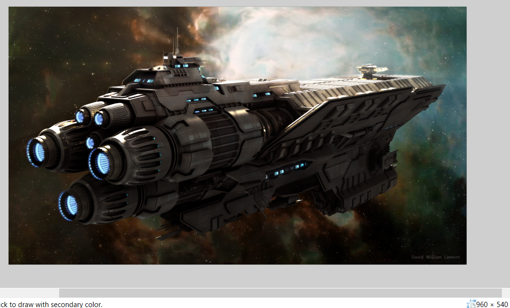
This downscaled image would then be given to the web browser, which automatically uses nearest neighbour resampling if the image it's given doesn't match the target width. In this case, 960 is not 512, so nearest neighbour resampling is done to get the image down to 512 pixels wide.
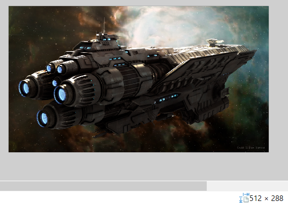
Verify: Area
The following steps can be used to emulate the rounded rectangle trimming effect in order to determine whether your image will look good with the trimming applied.
I have an image that is 1920 pixels wide.
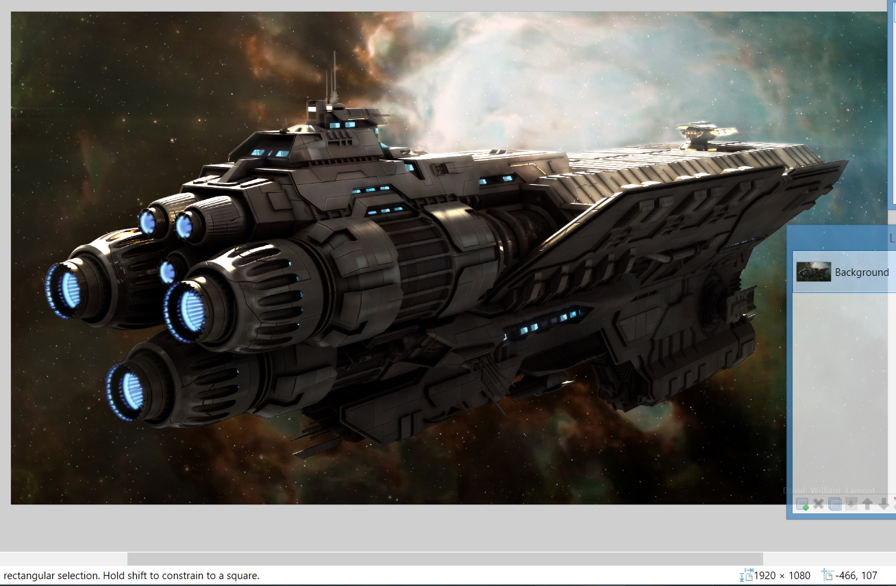
The corner radii of the rounded rectangle should be 1/20th of the image's width. 1920/20 = 96, so a rounded rectangle with a corner radius of 96 is drawn with the same dimensions as the image.
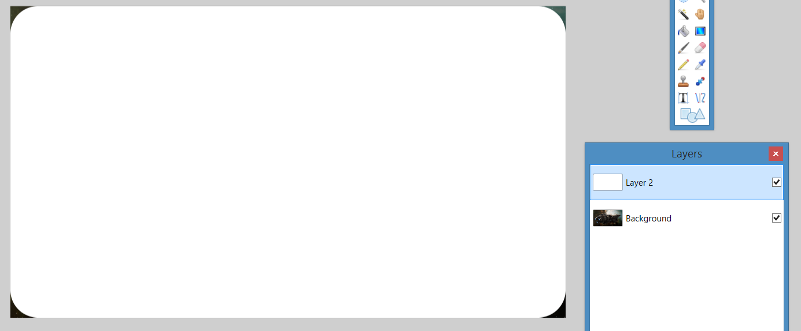
This rectangle's transparency channel is then pasted onto the main image.
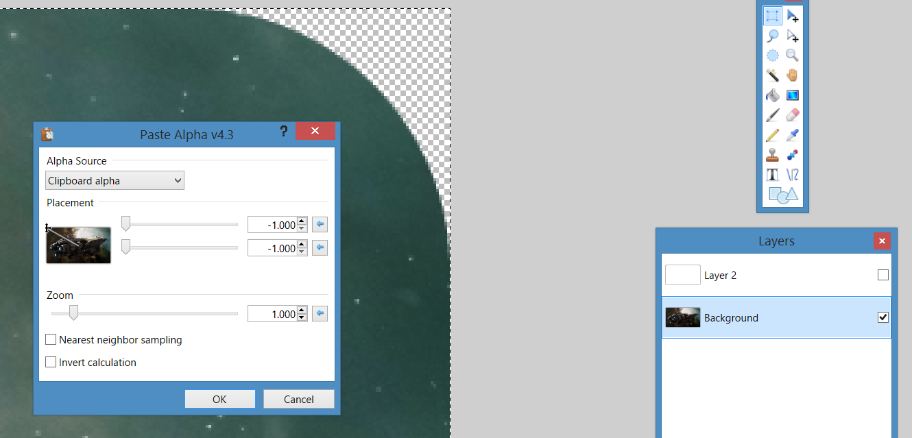
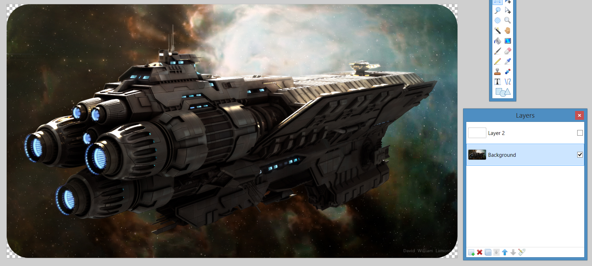